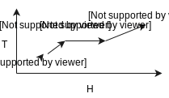

5.6 – Questions on \(C_v\) and \(C_p\)¶
5.6.0 – Learning Objectives¶
By the end of this section you should be able to:
- Visualize how \(C_v\) and \(C_p\) are used to calculate and solve various problems.
5.6.1 – Introduction¶
This notebook will cover questions relating to the \(C_v\) and \(C_p\).
5.6.2 – Question 1:¶
Argon is in a closed system at P = 100 atm, V = 300 L, and T = 600 K is brought to a state at P = 200 atm, volume at 300 L and 900 K. What is the change of internal energy in the system?
- Draw a diagram of the process taking place and write the relevant equation:
- Add simplifications and assumptions
- We assume the only work done is via \(P\Delta V\) but since there is no change in volume \(P\Delta V = 0,\space \therefore \space W = 0\) and the equation is reduced to \(\Delta U = Q\).
- Since we are working with a closed system, internal energy can be substituted as \(nC_v\Delta T\)
- Since we are working with argon which is an ideal monatomic gas, we can use the ideal gas law to fairly accurately estimate the number of moles and use \(C_v\) as \(\frac{3}{2} \space R\) where \(R = 0.08206 \frac{L \cdot atm}{mol \cdot K}\)
note: watch out for units sometimes you will get \(m^3\) and Pa!
- Solve equations
- Since we are given a direct relationship between \(U\) and \(T\) we do not need to know any formulas for the heat.
5.6.3 – Question 2:¶
18 kg of ice stored at -22 \(^\circ\)C is melted then brought to 32 \(^\circ\)C. How much energy is transferred in this system?
Assume heat capacity is a constant value. The specific heat capacity of ice is 2.108 \(kJ/kg \cdot\) \(^{\circ}C\); the latent heat of fusion is -334 \(J/g \cdot\) \(^{\circ}C\) and the specific heat capacity of water is 4.184 \(J/g \cdot\) \(^{\circ}C\).
Draw the diagram of the process taking place and write down the relevant equations.

- List simplifications and assumptions
- Any specific heat capacity used here are assumed to be constant because no information suggests otherwise. __ This is often the case __
- The mass \(m\) is constant in the system.
- Since all units are in Celsius and heat is in terms of a reference, we are not concerned with converting to kelvin.
- Solve equations. Mind the units
\(\Delta H_{ice} = m C_{(p, \space ice)} \Delta T = 18 \space kg \cdot 2.108\frac{kJ}{Kg \cdot ^{\circ}C} \cdot (0-(-22)) \space K = 835 \space kJ\)
\(\Delta H_{melting} = 18 \space kg \cdot 334 \space \frac{J}{g \cdot ^{\circ}C} \cdot \frac{1 \space kJ}{1,000 \space J} * \frac{1,000g}{1kg} = 6,012 \space kJ\)
\(\Delta H_{water} = 18 \space kg \cdot 4.184\frac{kJ}{kg \cdot ^{\circ}C} \cdot (32-0) \space K = 2,410 \space kJ\) (by the same unit conversion of ice).
\(\sum^n_{i=1} \Delta H_i = \Delta H_{ice} + \Delta H_{melting}+ \Delta H_{water} = ( 835 + 6,012 + 2,410) \space kJ = 9,257 \space kJ\)
5.6.4 – Question 3:¶
n-butane is brought from 450 \(^\circ\)C to 923\(^\circ\)C. Using the formal definition and formula of heat capacities, find the heat required to bring n-butane to this temperature.
Preamble: Because the temperature range that we are measuring is extremely large, it is important to capture the true heat capacity to evaluate the enthalpy. Here we must assume that the pressure is adequately low to assume ideal gas law. 1. Draw the diagram of the process taking place and write down the relevant equations.
- List simplifications and assumptions
- Solve equations Note mind your units! Kelvin and Celsius matter! For us, we are told to use Celsius.
Taking the tabulated data from table B2 and expanding the enthalpy equation:
Note: table B2’s powers are all supposed to be negative.
\(A = 92.3\times 10^{-3}\)
\(B = 27.88 \times 10^{-5}\)
\(C = -15.47 \times 10^{-8}\)
\(D = -34.98 \times 10^{-12}\)
\((T_1, \space T_2)=(450, \space 923 ) \space C\)
In [ ]: